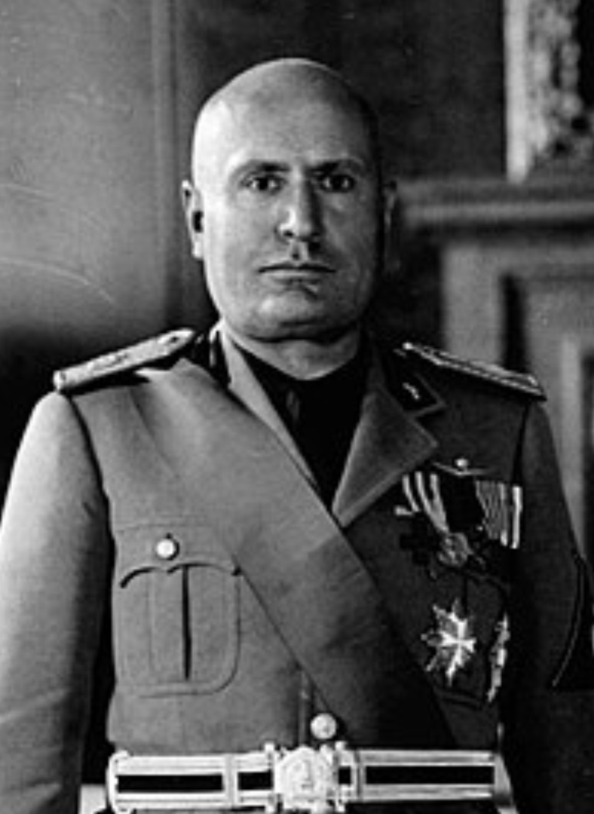

Nom : Benito Amilcare Andrea Mussolini
Dates : 29 juillet 1883 – 28 avril 1945
Nationalité : Italienne
Benito Mussolini est le fondateur du fascisme et dirige l’Italie de 1922 à 1943. Il instaure un régime autoritaire, supprime les libertés, et engage son pays dans une politique impérialiste qui le rapproche de l’Allemagne nazie.
Mussolini entre en guerre en juin 1940 aux côtés d’Hitler, convaincu que l’Allemagne remportera une victoire rapide. Ses offensives en Grèce et en Afrique du Nord se soldent par des échecs, obligeant l’Allemagne à intervenir pour soutenir l’Italie.
En 1943, il est renversé et arrêté. Hitler le fait libérer et le place à la tête d’un régime fantoche : la République sociale italienne (RSI). Il est capturé et exécuté par des partisans en avril 1945.
Mussolini est l’un des principaux dirigeants totalitaires du XXe siècle. Son régime a servi de modèle au nazisme et a profondément marqué l’histoire de l’Italie. Son engagement dans la guerre a entraîné l’effondrement militaire et politique du pays.